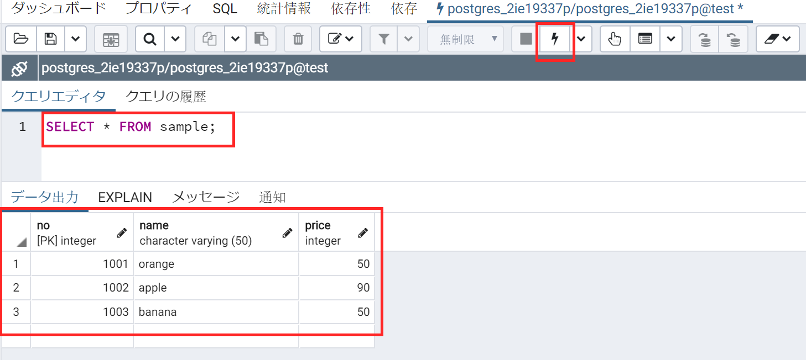

How to use pgAdmin4 pgAdmin4の使い方
Use GUI management interface for PostgreSQL DBMS
PostgreSQL DBMSのGUI管理インターフェイスを使用する
Login ログイン
You can either enter url http://133.5.19.187/pgadmin4 directly, or click on "Database Admin Page (PostgreSQL)" on Course Material page as shown below.
URL http://133.5.19.187/pgadmin4 を直接入力するか、以下に示すように、コース資料ページの[Database Admin Page (PostgreSQL)]をクリックします。
The username is your school email address
ユーザー名は学校のメールアドレスです
The default password we've created for you is: bdp2019w. You can change it later by yourself.
作成したデフォルトのパスワードは bdp2019w です。 後で自分で変更できます。
You can also select your favorite language, for this instruction, we'll use Japanese interface.
お気に入りの言語を選択することできますかが、この使い方では、日本語のインターフェイスを使用します。
Use GUI to query the database GUIを使用してデータベースを照会する
Connect to the database for the first time
初めてデータベースに接続する
Upon your first login, there's no server configured to your account. We can add one by clicking the "Add New Server" button.
最初のログイン時には、新しいアカウントですので、サーバーはありません。 [新しいサーバーを追加]ボタンをクリックして、サーバーを追加できます。
This will open up a dialog in which you can edit the configuration of your server.
これにより、サーバーの構成を編集できるダイアログが開きます。
In the "General" tab, input your favorite name as the server name (can be anything).
[一般]タブで、サーバー名として任意の名前を入力します（何でもかまいません）。

Next, go to the "Connection" tab and enter the credentials accordingly:
次に、「接続」タブに移動し、接続情報を入力します。
Host: localhost
ホスト名／アドレス： localhost
Maintenance database: "postgres_" + your student ID in lower case (For instance: postgres_1siXXXXXt)
管理用データベース： "postgres_" + すべての文字が小文字の学籍番号 (例えば: postgres_1siXXXXXt)
Username: Same as the "Maintenance database" (For instance: postgres_1siXXXXXt)
ユーザー名: 管理用データベースと同じ (例えば: postgres_1siXXXXXt)
Password: bdp2019w
パスワード: bdp2019w
Interface basics
インタフェースの基礎
After connected to the database, a valid server list should appear on the left side.
データベースに接続すると、サーバーリストが左側に表示されます。
Click on the "databases" icon and it will show you all the databases on our server. Your database should have been marked with a different color.
「データベース」アイコンをクリックすると、サーバー上のすべてのデータベースが表示されます。 自分のデータベースは別の色を付けます。
For this tutorial, I will use my database as an example. Please only use the database of your own.
この使い方では、私のデータベースを例として使用します。自分のデータベースのみを使用してください。
Create the table and insert some data
テーブルを作成し、データを挿入します
Click on the button on the left panel, and it will take you to the SQL interface.
左パネルの ボタンをクリックすると、SQLインターフェースが表示されます。
Here, we input your query shown below and hit the button.
ここでは、以下に示すクエリを入力し、 ボタンを押します。
CREATE TABLE sample (
no integer CONSTRAINT pk_no PRIMARY KEY,
name varchar(50),
price integer
);
INSERT INTO sample VALUES(1001,'orange',50);
INSERT INTO sample VALUES(1002,'apple',90);
INSERT INTO sample VALUES(1003,'banana',50);If you see this message, this means that you've successfully created the table and inserted the data.
このメッセージが表示された場合、これはテーブルが正常に作成され、データが挿入されたことを意味します。
Data selection データ選択
Next, let's confirm that we have data injected into the database.
次に、データベースにデータがあることを確認しましょう。
Again, we input our "SELECT" query in the textbox and hit the button to execute.
ここでも、テキストボックスに「SELECT」クエリを入力し、 ボタンを押して実行します。
SELECT * from `sample`;If all goes well, you should have the data returned to you shown below:
すべてうまくいけば、以下に示すデータが返されます。
Conclusion and future steps
まとめ
Congratulations! You've now learned the basics of dealing with a database. We recommend you to explore other options and queries to get familiar with it.
おめでとうございます！ これで、データベースを扱うための基本を学びました。 他のオプションやクエリを調べて、それをやってみるをお勧めします。
Also, since the databases are primarily accessed by programs, we recommend you go and check the 3rd week's materials. There, we will teach you how to do the basic query in python.
また、データベースには主にプログラムからアクセスするため、3週目の資料を確認することをお勧めします。 そこで、Pythonで基本的なクエリを実行する方法を説明します。